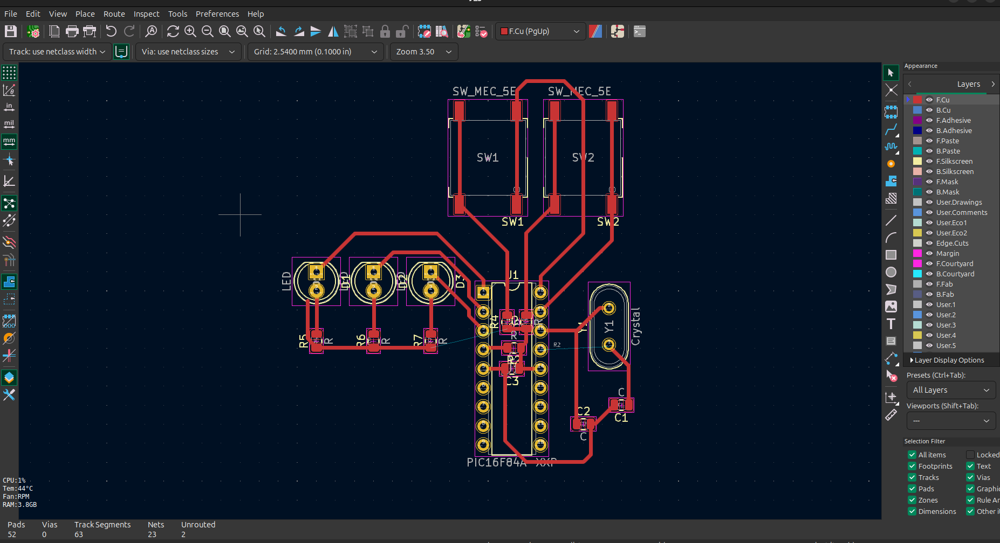

Od nápadu k prototypu
Ak ste na tejto stránke, pravdepodobne máte aspoň jeden nápad, ktorý by ste chceli realizovať. Možno ste o ňom veľa nepremýšľali, možno ho máte dokonale rozplánovaný. Veľmi často sa stáva, že projekt v niektorej fáze uviazne. Neviete alebo sa vám nechce pokračovať. Dobrá správa: Máme pre vás niečo, čo by minimalizovalo riziko nedokončenia projektu. Nedokončené projekty sú pomerne časté, a preto vznikol tento článok, kde nájdete rady aj o predídení potenciálnym problémom. Verím, že vás to inšpiruje a nestratíte motiváciu.
Nakreslite svoj nápad a popíšte ho
Svoj nápad premietnite z hlavy na papier. Nakreslite akokoľvek zložitú blokovú alebo detailnú schému a popíšte čo ako funguje. Tým si ujasníte čo to má byť a na čo to bude využité. Zvážte výhody a nevýhody, zrealizovateľnosť, potenciálne problémy a možnosť vylepšenia v budúcnosti. Nelámte si hlavu nad zrozumiteľnosťou. Hlavne, že sa v tom vyznáte vy. Tento krok je úplne na vás, nešetrite kreativitou. Ak zistíte, že vášmu projektu nič nestojí v ceste, smelo ku kroku 2.
Navrhnite zapojenie

Zostavte to prakticky
Podľa návrhu spojte súčiastky a diely. V tejto fáze je pravdepodobné, že sa už nemôžete dočkať, kedy to bude fungovať. Preto buďte trpezlivý a nepodceňte opatrnosť, nestrácajte systém a neponáhľajte sa. Je vyskúšané, že nie je múdre sa spoliehať na to, že "nejak to bude fungovať". Je ľahšie zabrániť chybe, ako ju potom hľadať a opravovať. Vyrobte DPS, naspájkujte súčiastky. Súčiastky môžete pred osadením pre istotu premerať, či sú funkčné a či sedia s návrhom. Osádzajte ich na dosku od najnižších po najvyššie. Ako spájkovať sa dozviete v článku Poďme spájkovať.
Otestujte to
Prichádza okamih pravdy... Uistite sa, že máte uzavretú poistku na všetko naokolo a radšej o krok ustúpte. Ale nie :P Ak má projekt viac dielov a pokiaľ je to možné, testujte jednotlivé časti samostatne. Ak sa vyskytne problém, je menšia šanca, že sa pokazia aj ostatné. Nakoniec otestujte všetko spolu.
Čo teraz?
Funkčnosť je najdôležitejšia. Ale ak chcete zapôsobiť aj na neodborné publikum (a ženy), odporúčam projekt vymakať aj po estetickej stránke. Nejaká jednoduchá štýlová krabička úplne stačí, k tomu zopár pôsobivých detailov a keď to nepreženiete farebnými kombináciami, je to perfektné. Je prirodzené, že teraz zistíte, ako ste to mohli vylepšiť. Prídete na chyby, začnete si všímať detaily. Ale to vôbec nevadí. Spravili ste omnoho viac. Dotiahli ste to totiž do konca, a to sa nepodarí každému. Nebolo by múdre to iba vylepšovať v polovici projektu a nikdy to nedokončiť. Odporúčam pred začatím novej verzie chvíľu počkať, kým sa chyby nahromadia. Potom ste pripravený pokračovať v nekonečnej slučke vylepšení.